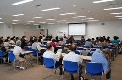

| 1. |
制度が発足して |
| ｢後期高齢者医療保険証が手元に届いていない｣｢年金からの天引きに納得がいかない｣という声があります。後期高齢者医療制度は国民健康保険と老人保険を利用していたものがひとつになったもので、国民健康保険から除外される形になっています。 |
 |
| 2. |
どうしてこの制度を作る必要があったのか |
| 2006年６月に医療改革関連法が成立し、2025年までに公的医療給付を年間８兆円削減（そのうち後期高齢者医療保険制度により５兆円を見込む）という、医療費抑制のための構造改革です。 |
| 3. |
現在の高齢者の状況について |
（高齢者医療、介護、生活実態調査：06年12月調査／全県443人アンケートより）
収入が低いほど健康の｢不調｣を訴え、｢外出｣が少なくなっています。また、ここ４、５年での医療・介護費の負担を感じる人が増加(負担感は45.9％)し、無年金５％、くらし向きが悪化していると感じている方は36％いました。
|
| 4. |
制度の仕組みと問題点 |
| 各県ごとに｢後期高齢者医療広域連合｣が運営し、保険料等決定。全市町村が加入。問題点は、財政の５割は公費、４割は後期高齢者支援金(若年者の保険料)、1割が高齢者の保険料になっていることや、無収入や無年金でも保険料の減免がないうえに、保険料を滞納した場合は保険証を取り上げるなどがある。 |
| 5. |
医療・介護現場の危機 |
| 医師不足、医師の負担(小児科・産婦人科)等、医療現場の問題は大きい。病院の倒産件数が2007年激増。介護報酬引き下げ、介護職員の離職率３年未満が８割。事業所は縮小、閉鎖が相次ぐ。 |
| |
| |
まとめとして、｢より良い医療や社会保障費のあり方について、みんなで学習、声を上げましょう｣と結ばれました。
|